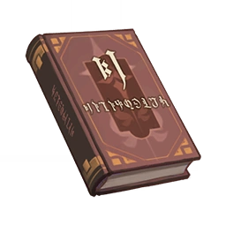

Mondstadt · Books & Literature
Hilichurl Ballad Selection
Jacob Musk’s two-volume collection records seven Hilichurlian poems and his observations about when they are sung. His notes mix observation with interpretation, so the book is one scholar’s record rather than a full translation or universal account of hilichurl life.

A field collection by Jacob Musk
Hilichurl Ballad Selection is a two-volume book collection attributed to Jacob Musk, a Mondstadt ecologist. Its introduction says he traveled across Teyvat to visit hilichurl tribes and gather their poetry. The text presents him as the ‘Poet Laureate of Hilichurlian,’ while also remarking that neither Musk nor the hilichurls were especially pleased with the title.
Volume I is found in the Knights of Favonius Headquarters library. Ella Musk can provide Volume II through a dialogue path. The book’s authorship, volume count, and acquisition are separate from Ella’s own draft poetry.
Three songs in Volume I
The first song is described as a possible pre-combat chant: Jacob reports that after a hilichurl sings it, those nearby may break into a fight. The second accompanies dancing around totem poles; he calls it a possible hymn and says it is heard at festivals.
The third is a melancholic song that Jacob heard from an elderly Samachurl. He says he does not understand its literal meaning, though he senses grief in it. That distinction is important: the book records his emotional response, not a translation supplied by the singer.
Four more songs in Volume II
The fourth song is sung by Samachurls. Jacob reads the chief’s reaction as evidence that it may carry philosophical meaning, while admitting that such a possibility might be dismissed by mainstream scholars. His note leaves the question open rather than explaining the song.
The remaining entries describe an ode heard among wind-worshipping hilichurls when they are drunk, a pious song associated with sacrifices, and a chief’s song around a moonlit bonfire. Jacob suggests that the final refrain ‘nunu’ means sleep, but explicitly presents this as his presumption.
Songs and commentary are different kinds of evidence
The poems themselves appear in written Hilichurlian, while most of the English text consists of Jacob’s observations and guesses about their settings or meaning. The book does not provide a complete line-by-line translation for the seven songs.
A proposed translation built from other Hilichurlian phrases, commissions, or language notes should be labeled as a later interpretation. It should not be presented as if Jacob’s collection itself supplies a definitive English version.
Jacob’s viewpoint shapes the record
Jacob’s commentary mixes close observation with an outsider’s judgments. He calls the first song vulgar, treats philosophical meaning as a possibility that could sound ridiculous in academic circles, and makes a comic aside about the odor of the elderly Samachurls. His description of the sacrifice song is also his account, not an explanation given by a hilichurl participant.
That voice gives the collection personality, but it also sets limits on what it can establish. Read the notes as one scholar’s field record, including his uncertainty and bias, rather than a neutral or comprehensive ethnography.
Ella’s books and commission are separate
Ella Musk is Jacob’s daughter and a student of Hilichurlian. She is connected to Volume II as the person who can give it to the Traveler, but the collection is credited to Jacob. Ella’s own three-part Draft Hilichurl Ballads are explicitly presented as drafts, and Poetry Exchange uses a separate temporary poem item in her attempt to communicate with hilichurls.
The two collections therefore preserve different voices and purposes: Jacob’s finished compilation and field commentary, and Ella’s early experiments with composing and using the language. Neither should stand in for every hilichurl tradition.
What the collection can establish
The book supports a limited conclusion: Jacob recorded seven Hilichurlian songs and associated them with several settings, including festivals, exchanges with Samachurls, drinking, sacrifice, and night gatherings. It shows that his work concerns poetry as well as the people who perform it.
It does not settle the literal meaning of every poem, prove that every tribe shares the same customs, or provide a complete account of hilichurl society. Compare its claims with other in-game sources and keep Jacob’s interpretations attributed to him.
This is an original CoreGG reading guide, not an official HoYoverse article or a reproduction of the game text. Source links below identify the records used so you can check the original context.
Sources & references
Check these sources for the original game text and reference trail.